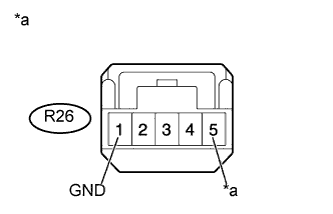
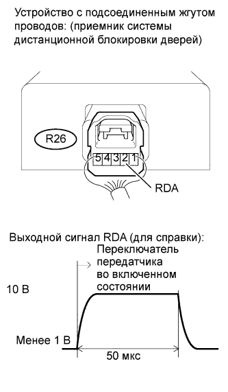

СИСТЕМА ДИСТАНЦИОННОЙ БЛОКИРОВКИ ДВЕРЕЙ (для моделей без системы посадки и запуска) > Не работает только функция дистанционного управления |
| 1.ПРОВЕРЬТЕ РАБОТУ СИСТЕМЫ УПРАВЛЕНИЯ ЗАМКАМИ ДВЕРЕЙ |
Проверьте работу системы управления замками дверей (Нажмите здесь).
|
| ||||
| OK | |
| 2.ПРОВЕРЬТЕ РАБОТУ СИСТЕМЫ ПРЕДУПРЕЖДЕНИЯ ОБ ОСТАВЛЕНИИ КЛЮЧА В ЗАМКЕ ЗАЖИГАНИЯ |
Проверьте работу системы предупреждения об оставлении ключа в замке зажигания (Нажмите здесь).
|
| ||||
| OK | |
| 3.ПРОВЕРЬТЕ ПЕРЕДАТЧИК СИСТЕМЫ ДИСТАНЦИОННОГО УПРАВЛЕНИЯ ЗАМКАМИ ДВЕРЕЙ |
Проверьте работу системы дистанционной блокировки дверей с помощью другого зарегистрированного передатчика.
|
| ||||
| OK | |
| 4.ПРОВЕРЬТЕ АККУМУЛЯТОРНУЮ БАТАРЕЮ ПЕРЕДАТЧИКА |
Извлеките батарею из передатчика системы дистанционной блокировки дверей (Нажмите здесь).
Измерьте напряжение в соответствии со значениями, приведенными в таблице.
| Контакты для подключения диагностического прибора | Условие | Заданные условия |
| Положительный (+) вывод батареи - отрицательный (-) вывод батареи | Всегда | 2,5 - 3,2 В |
|
| ||||
| OK | ||
| ||
| 5.ПРОВЕРЬТЕ, НЕТ ЛИ ЭЛЕКТРИЧЕСКИХ ПОМЕХ |
Внесите передатчик в зону действия приемника системы дистанционной блокировки дверей.
Нажмите и удерживайте кнопку LOCK (ЗАБЛОКИР) или UNLOCK (РАЗБЛОКИР) в течение 1 секунды и убедитесь, что все двери соответственно блокируются или разблокируются.
|
| ||||
| OK | ||
| ||
| 6.ПРОВЕРЬТЕ ЖГУТ ПРОВОДОВ И РАЗЪЕМ (ПРИЕМНИК СИСТЕМЫ ДИСТАНЦИОННОЙ БЛОКИРОВКИ ДВЕРЕЙ - ГЛАВНЫЙ ЭБУ КУЗОВА) |
Отсоедините разъем R26 приемника.
Отсоедините разъем G64 ЭБУ.
Измерьте сопротивление в соответствии со значениями, приведенными в таблице ниже.
| Контакты для подключения диагностического прибора | Условие | Заданные условия |
| R26-2 (RDA) - G64-26 (RDA) | Всегда | Менее 1 Ом |
| R26-3 (PRG) - G64-25 (PRG) | ||
| R26-2 (RDA) или G64-26 (RDA) - масса | Всегда | 10 кОм или более |
| R26-3 (PRG) или G64-25 (PRG) - масса |
|
| ||||
| OK | |
| 7.ПРОВЕРЬТЕ ЖГУТ ПРОВОДОВ И РАЗЪЕМ (ПРИЕМНИК СИСТЕМЫ ДИСТАНЦИОННОГО УПРАВЛЕНИЯ ЗАМКАМИ ДВЕРЕЙ - АККУМУЛЯТОРНАЯ БАТАРЕЯ И МАССА) |
|  |
Отсоедините разъем R26 приемника.
Измерьте сопротивление и напряжение в соответствии со значениями, приведенными в таблице.
| Контакты для подключения диагностического прибора | Условие | Заданные условия |
| R26-1 (GND) - масса | Всегда | Менее 1 Ом |
| Контакты для подключения диагностического прибора | Условие | Заданные условия |
| R26-5 (+B) - масса | Всегда | 11 - 14 В |
| *a | Вид спереди разъема со стороны жгута проводов: (к приемнику системы управления замками дверей) |
|
| ||||
| OK | |
| 8.ПРОВЕРЬТЕ ПРИЕМНИК СИСТЕМЫ УПРАВЛЕНИЯ ЗАМКАМИ ДВЕРЕЙ (ВЫВОД) |
|  |
С помощью осциллографа проверьте форму сигнала.
| Позиция | Описание |
| Контакты для подключения диагностического прибора | R26-2 (RDA) - масса |
| Настройки прибора | 10 В/дел., 50 мкс/дел. |
| Режим | Ключ не вставлен в цилиндр замка зажигания, все двери закрыты, выключатель передатчика: выкл → вкл |
| Результат | Следующий шаг |
| OK | А |
| NG (для 5-дверных моделей) | B |
| NG (для 3-дверных моделей) | C |
|
| ||||
|
| ||||
| А | ||
| ||